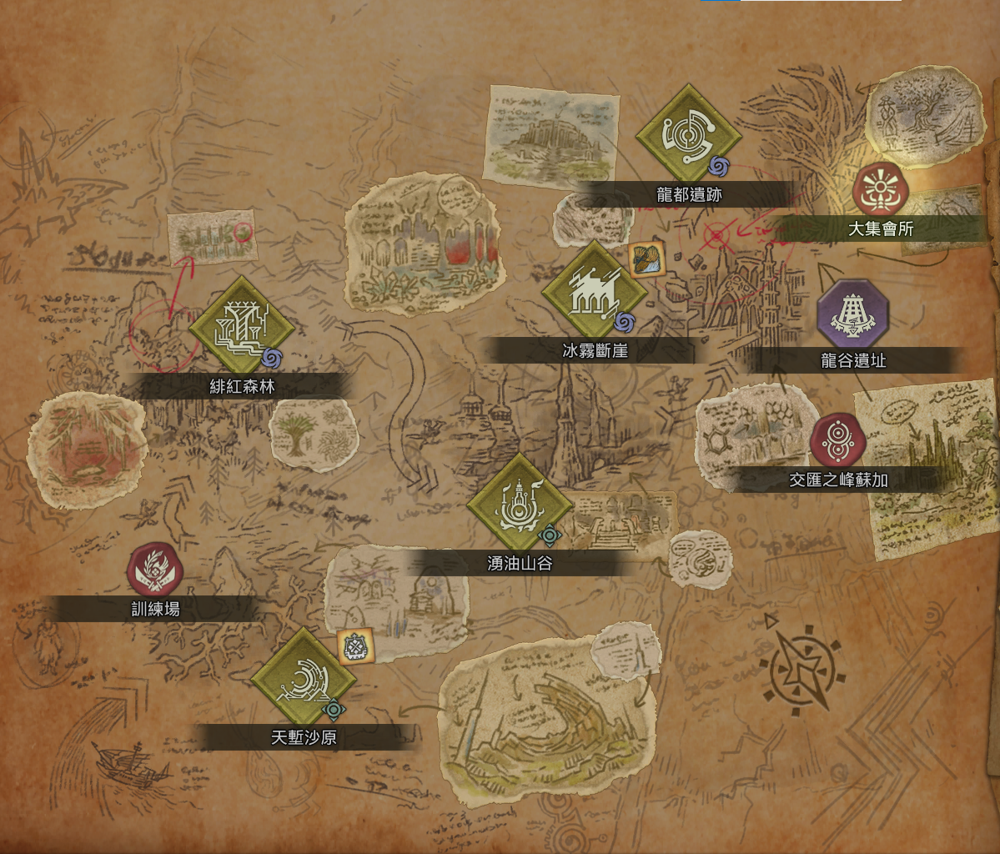

Home
Classification
Map
Join Us
Event
Palace website about wilds

In Wilds,There are five large maps as the main part
It is a dense tropical forest that features lush vegetation and bodies of shallow water that are coloured red during the fallow period, explaining the locale’s name. This location is the second visited by the Hunters Guild during their expedition to the Forbidden Lands.
It is a dense tropical forest that features lush vegetation and bodies of shallow water that are coloured red during the fallow period, explaining the locale’s name. This location is the second visited by the Hunters Guild during their expedition to the Forbidden Lands.
It is highly vertical cavernous region defined by the heavy presence of ancient machinery. The upper strata features oil like swamps whilst the lower strata features dangerously high temperatures and pools of magma. This location is the third visited by the Hunters Guild during their expedition to the Forbidden Lands.
It is an eerie region composed of the frozen remnants of the great wall surrounding Wyveria. The lower caves are covered in thick webbing whilst the upper sections feature many dilapidated ancient structures as well as strange floating rocks that defy the laws of gravity. This location is the fourth visited by the Hunters Guild during their expedition to the Forbidden Lands.
It is a bizarre biome filled with silver flora, eroding ruins, and a strange substance in the ground called Wylk. This location originally was a prosperous city named Wyveria, until the city's greatest weapons turned against it, which now take control of and roam its ruins.